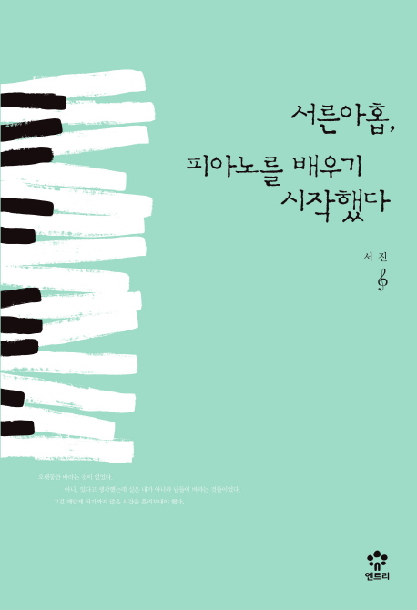
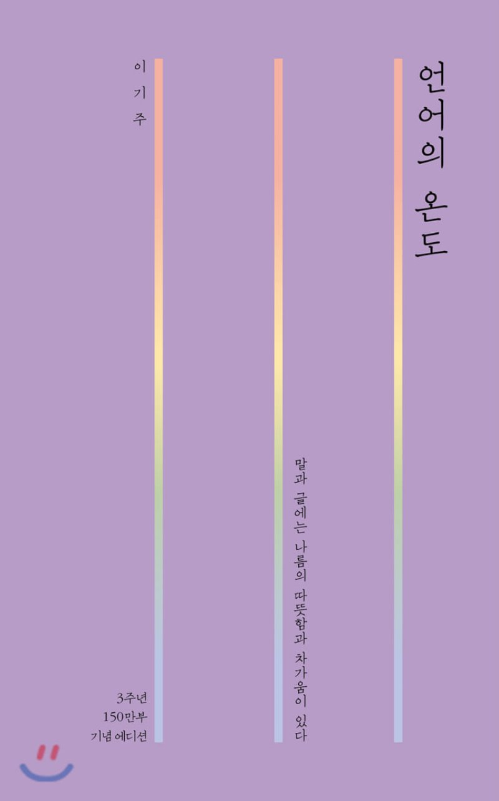
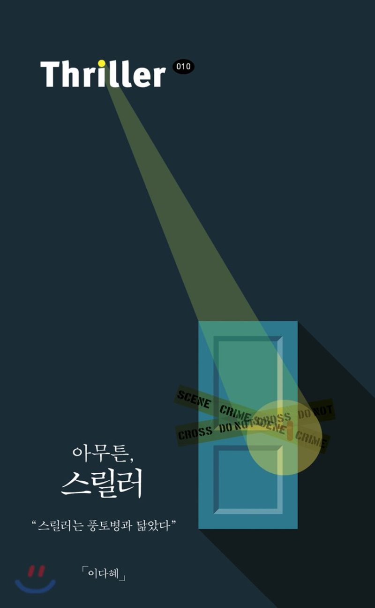

|  |
서른아홉, 서진 서른 즈음 되면 뭔가를 이뤘을 거라 생각했다. 내 삶을 정립하는 가치관이나 금전적 독립, 커리어, 사랑……. 하지만 ‘많은 서른’이 청춘이니까 아팠던 스무 살과 별반 다르지 않음을 느낀다. |
내용 : 문체 : 편집 / 디자인 : 기승전결 : 독창성 : |
|  |
언어의 온도 이기주 말과 글에는 나름의 온도가 있다. 따뜻함과 차가움의 정도가 저마다 다르다. 적당히 온기 있는 언어는 슬픔을 감싸 안아준다. 세상살이에 지칠 때 어떤 이는 친구와 이야기를 주고받으며 고민을 털어내고, 어떤 이는 책을 읽으며 작가가 건네는 문장에서 위안을 얻는다. |
내용 : 문체 : 편집 / 디자인 : 기승전결 : 독창성 : |
|  |
아무튼 스릴러 이다혜 ‘생각만 해도 좋은, 설레는, 피난처가 되는, 당신에게는 그런 한 가지가 있나요?’ 아무튼 문고의 열 번째 책이다. 영화 전문지 기자이자 에세이스트, 북 칼럼니스트 이다혜의 스릴러 탐닉기. 어린이용 셜록 홈즈와 세로쓰기 애거사 크리스티 전집부터 가해자 가족들이 쓴 처절한 논픽션까지, |
내용 : 문체 : 편집 / 디자인 : 기승전결 : 독창성 : |

|
나는 향수로 글을 쓴다 장 끌로도 엘레나 조향사 장 끌로드 엘레나가 향수와 삶에 대한 자신의 솔직한 생각을 『나는 향수로 글을 쓴다』에 담백하게 담았다. 조향사가 되기까지의 열정과 과정, 자신의 삶을 풍성하게 해준 사람들 그리고 삶의 소소한 즐거움 |
내용 : 문체 : 편집 / 디자인 : 기승전결 : 독창성 : |